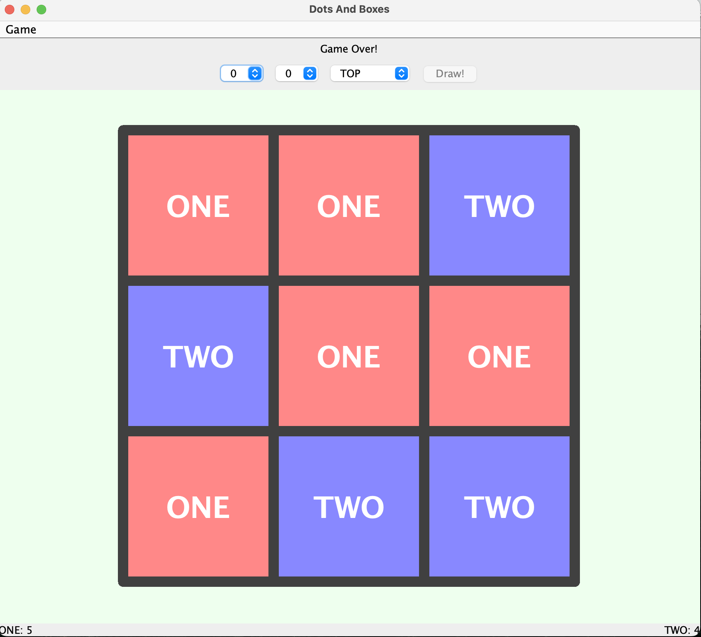
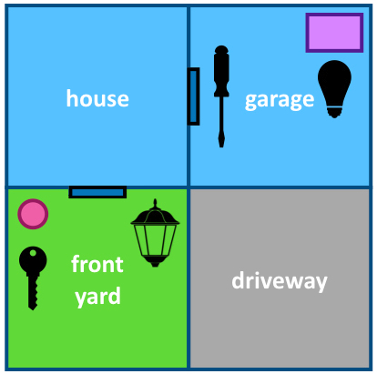
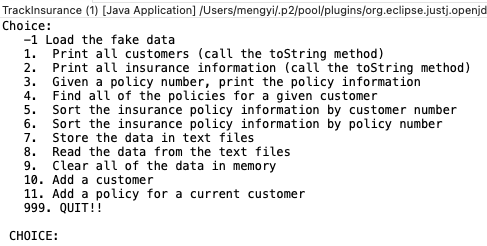

This is a showcase of my projects and a little bit about myself.
about
I am a graduate student at Virginia Tech in the program of Information Technology, reshaping my skills
by the radical development and innovation of computer technology. I have been developing my
understanding in this area by learning Java, HTML, CSS, Vue (website development), database
management, and e-commerce and am expecting to explore software development.
I have a great passion for both life and work and I am a lifelong learner. When I disconnect from the
social network, I reconnect myself with podcasts 🎙.
Currently looking to be a Software Development Intern or Entry-level Software Developer.
E-commerce Website Building
-> Designed a bookstore website that has home, category, user login, cart, and checkout pages
using HTML, CSS, JavaScript, and Vue components.
-> Populated the bookstore database with various categories of books using SQL.
-> Consolidated REST Api service to handle user’s HTTP requests and access bookstore DAO objects
from the server side.
-> Used Vuex store to centralize all components and manage bookstore state.
-> Implemented Vuelidate to validate user data in the browser (client).
Dots & Boxes [Wikipedia link]and Adventure Game
-> Used Swing component to create a responsive game interface that can dynamically update
users’scores and interact with user each round.

-> Created the underlying game engine to initialize games, keep track of score, switch players,
delegate game logic using Java collections, interfaces, and try-catch structure.
-> Tested the game logic with Junit before implementation to examine all possible results.

Simplified “AI” system
for Tetris playing: Compute the best of all possible
placements, using a cost-based algorithm. Choose the best placement for each shape and perform
calculations.
(Java, Junit)
Demo video below
Employed
Scrum methodology
to draft business plans including Products and Service, Marketing Plan, Operations, and
Financials research for two startups. Led a group project to build a pet store e-commerce
website. Previsioned additional technologies that may be incorporated in the store, such as AWS.
Click here
Used JavaScript to create a
lead tracker Chrome extension
to source potential leads by saving tab URL or capturing inputs to local storage.
Used Java to create a
vending machine program
to sell various types of
products, ask for payments, and calculate costs and remaining balance based on coins input
Insurance tracking program:
read and load data, search and sort by policy
number, store customer information in permanent files, add new customers information in the
database, and hand exceptions of invalid inputs.

Designed a
data warehouse
to solve management problems of a large corporation
consisting of over
200 hotels worldwide. Extracted, transformed, and loaded massive data. Represented business
situations via data visualization using ROLLIUP and CUBE features of SQL.
gallery
I love speding time on capturing every beautiful moment of life.